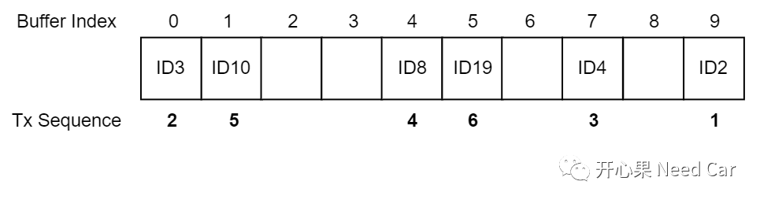
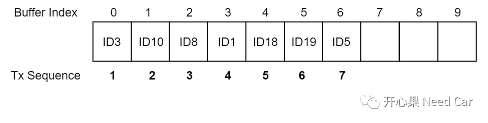
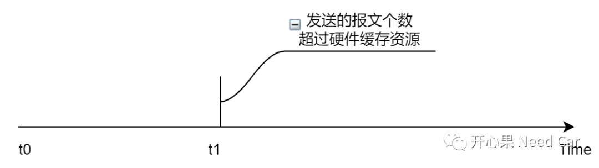
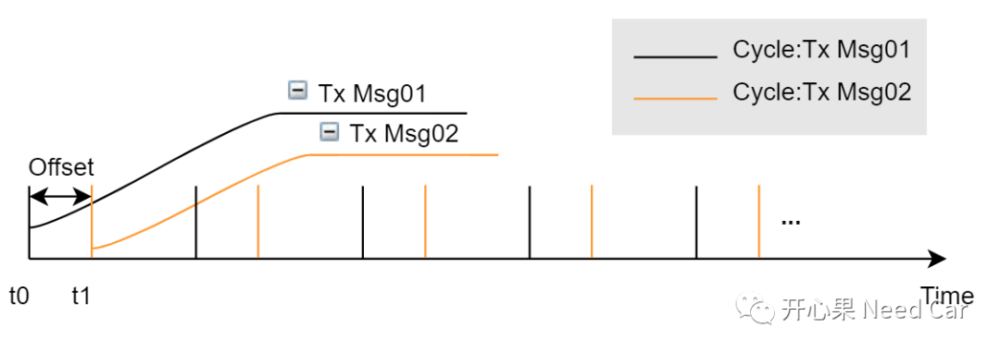
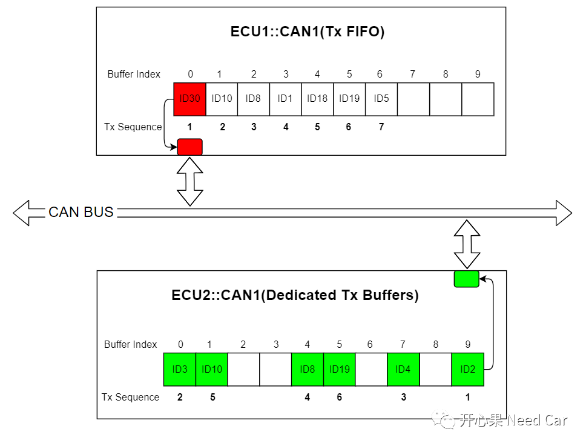
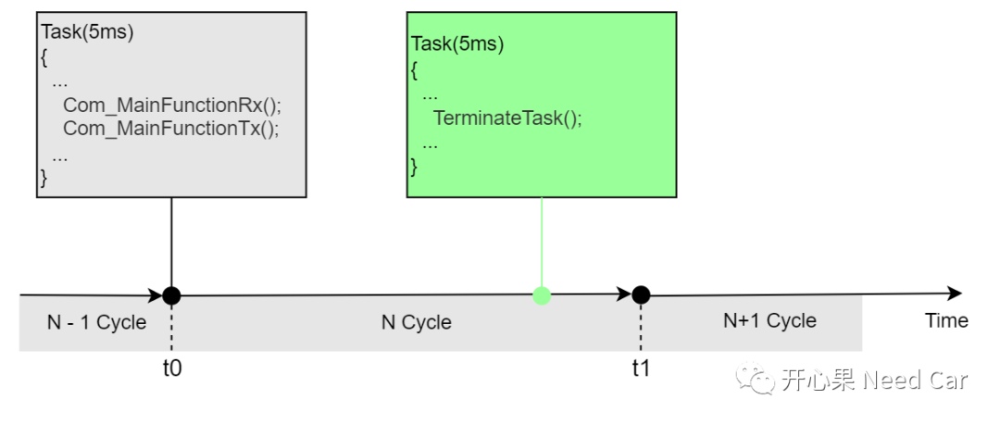
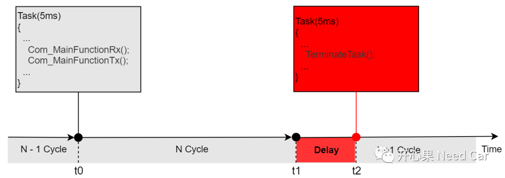
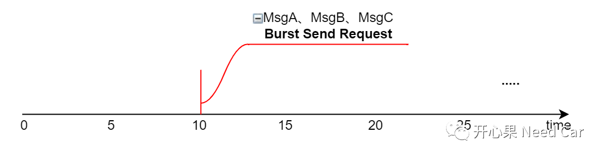
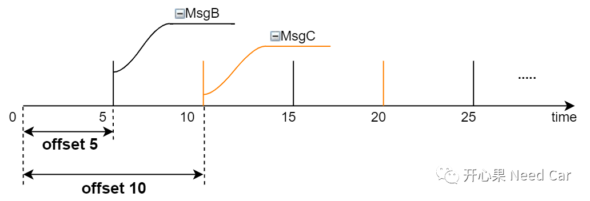
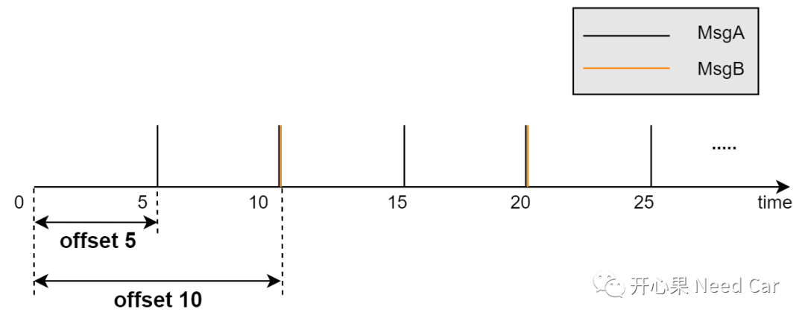

QA1：CAN报文发送，有优先级吗？
答：有。以英飞凌tc3xx系列为例，MCMCAN模块有多个硬件发送缓冲区，也就是说同一时刻可以缓存多个待发送的报文，这些报文放入待发送的缓冲区以后，会置位发送Pending标志，等待发送，谁先发送呢？在回答这个问题之前，我们先说待发送的报文在硬件缓存区中的存储方式：Dedicated Tx Buffers 、Tx FIFO、 Tx Queue。
对于Dedicated Tx Buffers与 Tx Queue两种存储方式，根据lowest Message ID原则发送，即：发送的CanID数值越小，优先级越高。具体发送顺序示例如下：


如果使用Dedicated Tx Buffers与 Tx Queue两种存储方式，优先级低的报文(比如：网络管理报文、诊断报文、标定报文等，优先级比应用报文低），是不是永远得不到发送了？不是，我们要清楚：发送的硬件缓存区不止一个，而是多个（比如：tc397有32个发送缓冲区），足以在某一时刻缓存多个待发送的报文。是否存在某一时刻（如下t1），发送报文的个数超过硬件缓存区个数？这种可能性是存在的，这也是为什么会有发送报文丢帧的原因。


QA2：Tx FIFO发送方式可能引发的问题有什么？
答：对于CAN报文，使用FIFO方式发送，我能想到的场景：诊断中，发送诊断指令使用FIFO缓存，保证诊断指令请求的顺序。不知道大家在何种情况下使用过Tx FIFO，还请大家给普及。
这里思考到了一种工况，可能会因使用FIFO发送方式，导致报文的发送延迟，具体如下所示：
假设：CAN BUS上有两个节点：ECU1::CAN1和ECU2::CAN1，ECU1::CAN1使用Tx FIFO缓存待发送数据，ECU2::CAN1使用Dedicated Tx Buffers方式缓存待发送数据。在某一时刻，ECU1::CAN1的Buffer Index0待发送报文的CAN ID = 0x30，ECU2::CAN1待发送的6个报文的CAN ID ＜0x30，所以，每次总线仲裁，都会优先发送ECU2::CAN1缓存的报文，而ECU1::CAN1因为总线仲裁失败，导致ECU1::CAN1 FIFO中的高优先级报文无法及时发送出去，如下所示：

所以，在使用Tx FIFO方式时，需要注意此工况。
QA3：程序应先处理发送报文还是应该先处理接收报文？


对于一个节点，接收报文数量存在不确定性，比如：接收的报文类型如果有事件性应用报文、高周期应用报文（如：1ms周期性应用报文）等。那么Com_MainFunctionRx()的处理时间就会存在一定的不确定性。相对于接收报文，节点发送报文的数量相对比较确定，发送所消耗的时间也比较确定，所以，从处理顺序上来说，先处理确定的发送再处理不确定的发送比较合理，这样可以确保发送报文的时间。而对于接收，即使超一点时间，如果Task没有超过Deadline Time，对程序的运行也不会造成太大影响。
再者，对于CAN报文，发送报文还需要进行总线仲裁，仲裁失败也会存在一定的延时（参考QA2）。
注意：上述假设OS所使用的基准计数器是可信的，即：基础计数器准确，一般由GPT或者STM驱动。
QA4:周期型报文Offset的作用是啥？
答：降低同一时刻，多个发送报文的Burst Send问题。这个问题属于QA1的延申。
一个节点，发送的报文类型可以有多种（QA1提到）。其中，节点外发的应用报文从几个到几十个不等。应用报文又分为事件型、周期型、混合型。以周期型应用报文为例，可能有5ms、10ms、20ms、50ms等周期。如果本节点外发的报文数量较大，在某一时刻会存在大量并发请求。比如：MsgA Cycle =5ms，MsgB Cycle = 10ms，MsgC Cycle = 10ms，如果MsgA的发送时刻为5ms、10ms、15ms、20ms、25ms、30ms.....MsgB、MsgC的发送时刻为10ms、20ms、30ms.....，在time ＝ 10ms、time ＝ 30ms......等时刻，MsgA 、MsgB、MsgC会同时请求发送，节点要发送的报文数量越多，某一时刻（如下图time = 10ms 时刻），请求发送的报文数量可能就越多。




参考资料
SIMPLE TITLE
往期精彩回顾